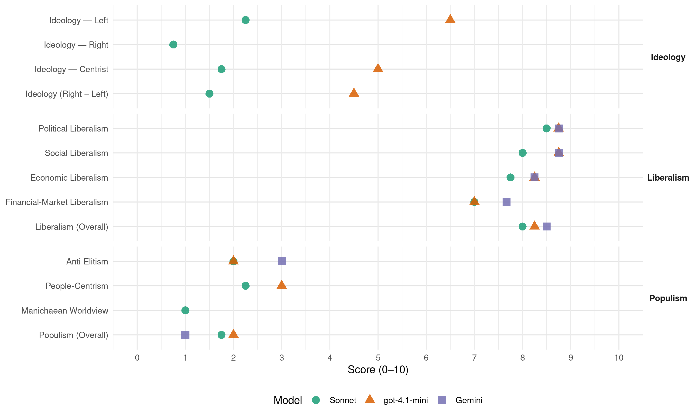

V (Norway, 2009)
manifesto_id 12420_200909
Get full text: This site shows derived annotations and short verbatim quotes only. The full manifesto text is © Manifesto Project / WZB — obtain it via manifesto-project.wzb.eu using the manifesto_id above.
Headline scores
| Dimension | Sonnet | gpt-4.1-mini | Gemini |
|---|---|---|---|
| Populism (Overall) | 1.8 | 2.0 | 1.0 |
| Anti-Elitism | 2.0 | 2.0 | 3.0 |
| People-Centrism | 2.2 | 3.0 | – |
| Manichaean Worldview | 1.0 | – | – |
| Ideology (Right − Left) | 1.5 | 4.5 | – |
| Liberalism (Overall) | 8.0 | 8.2 | 8.5 |
| Political Liberalism | 8.5 | 8.8 | 8.8 |
| Social Liberalism | 8.0 | 8.8 | 8.8 |
| Economic Liberalism | 7.8 | 8.2 | 8.2 |
| Financial-Market Liberalism | 7.0 | 7.0 | 7.7 |
Evidence per dimension
Economic Liberalism
Gemini · score 8.0 · verified · chunk 1
“Markedsøkonomien skaper valgfrihet og velstand”
uavhengige domstoler. Markedsøkonomien skaper valgfrihet og velstand gjennom åpen konkurranse, eiendomsrett
Gemini · score 9.0 · verified · chunk 2
“en velfungerende liberal markedsøkonomi krever”
En velfungerende liberal markedsøkonomi krever en liberal, reformistisk politikk; en politikk
Gemini · score 8.0 · verified · chunk 3
“åpen konkurranse, eiendomsrett, nyskaping”
Markedsøkonomien skaper valgfrihet og velstand gjennom åpen konkurranse, eiendomsrett, nyskaping og forbrukervalg.
Gemini · score 8.0 · verified · chunk 4
“bygger ned tollbarrierer og sikrer like muligheter”
Arbeide for en WTO-avtale med et rettferdig, globalt regelverk som bygger ned tollbarrierer og sikrer like muligheter for utvikling.
gpt-4.1-mini · score 8.0 · verified · chunk 1
“Markedsøkonomien skaper valgfrihet og velstand gjennom åpen konkurranse, eiendomsrett”
…Markedsøkonomien skaper valgfrihet og velstand gjennom åpen konkurranse, eiendomsrett, nyskaping og forbrukervalg. På sitt beste sprer markedsøkonomien makt og bidrar til desentralisering. Men demokratiske beslutninger må alltid sette rammer for markedsøkonomien. Fellesskap er mye mer enn stat og kommune. Det sivile samfunnet omfatter alle former for frivillig samarbeid og samfunnsdannelse mellom mennesker basert på felles interesser og verdier. Det sivile samfunnet omfatter blant annet selvstendige organisasjoner, kulturlivet…
gpt-4.1-mini · score 9.0 · verified · chunk 2
“marked, konkurranse, næringsliv, bedrifter, skatt, regulering, privatisering”
Venstre vil satse på forskning og nyskaping og legge bedre til rette for dem som vil skape en arbeidsplass for seg selv og flere.
gpt-4.1-mini · score 8.0 · verified · chunk 3
“Markedsøkonomien skaper valgfrihet og velstand gjennom åpen konkurranse”
Markedsøkonomien skaper valgfrihet og velstand gjennom åpen konkurranse, eiendomsrett, nyskaping og forbrukervalg. Det sivile samfunnet omfatter blant annet selvstendige organisasjoner, kulturliv, tros- og livssynssamfunn og den kritiske offentlighet som mediene og andre bidrar til å skape.
gpt-4.1-mini · score 8.0 · verified · chunk 4
“Venstre vil at det utvikles rettferdige, globale rammebetingelser der befolkningen i utviklingsland gis adgang til globale markeder”
Venstre vil at det utvikles rettferdige, globale rammebetingelser der befolkningen i utviklingsland gis adgang til globale markeder og mulighet til migrasjon. Arbeide for en WTO-avtale med et rettferdig, globalt regelverk som bygger ned tollbarrierer og sikrer like muligheter for utvikling.
Sonnet · score 8.0 · verified · chunk 1
“Markedsøkonomien skaper valgfrihet og velstand gjennom åpen konkurranse”
Markedsøkonomien skaper valgfrihet og velstand gjennom åpen konkurranse, eiendomsrett, nyskaping og forbrukervalg. På sitt beste sprer markedsøkonomien makt og bidrar til desentralisering.
Sonnet · score 8.0 · verified · chunk 2
“Redusere det statlige eierskapet i næringslivet”
Samle statlig eierskap for selskap som er i konkurranse og under offentlig regulering i Nærings- og handelsdepartementet. Redusere det statlige eierskapet i næringslivet.
Sonnet · score 8.0 · verified · chunk 3
“Markedsøkonomien skaper valgfrihet og velstand gjennom åpen konkurranse”
Markedsøkonomien skaper valgfrihet og velstand gjennom åpen konkurranse, eiendomsrett, nyskaping og forbrukervalg
Sonnet · score 7.0 · verified · chunk 4
“bygger ned tollbarrierer og sikrer like muligheter”
WTO-avtale med et rettferdig, globalt regelverk som bygger ned tollbarrierer og sikrer like muligheter for utvikling
Financial-Market Liberalism
Gemini · score 8.0 · verified · chunk 2
“banker og finansnæringen stå vesentlig bedrerustet”
Gjennom reguleringer som også virker motsykliske, og dermed konjunkturstabiliserende, vil banker og finansnæringen stå vesentlig bedrerustet til å tåle konjunktursvingninger.
Gemini · score 8.0 · verified · chunk 3
“åpne finansmarkeder og finansiell globalisering”
høste betydelige gevinster av åpne finansmarkeder og finansiell globalisering er det av avgjørende betydning at
Gemini · score 7.0 · verified · chunk 4
“Legge til rette for mikrokredittordninger”
monopoler. Legge til rette for mikrokredittordninger. At en større del av Statens pensjonsfond
gpt-4.1-mini · score 7.0 · verified · chunk 1
“Økonomisk politikk 427.1 Finanspolitikken 437.2 Skatte- og avgiftspolitikk 437.2.1 Fra rød til grønn skatt”
…5. Næringog nyskaping Et mangfoldig og nyskapende næringsliv er avgjørende for at Norge skal lykkes i en stadig mer globalisert økonomi. Offentlig sektor og offentlig velferd er helt avhengig av verdiskapingen i det private næringsliv og av at initiativrike personer satser, tar risiko og omsetter ideer til handlinger. Derfor er utgangspunktet i Venstres næringspolitikk gode generelle rammevilkår for alle deler av næringslivet, kombinert med en målrettet innsats for utvikling av flere og bedre kunnskapsbedrifter. Vi vil satse på forskning og nyskaping og legge bedr e til rette for dem som vil skape en arbeidsplass for seg selv og flere. Venstre vil legge om den økonomiske politikken, og dermed også næringspolitikken. Vi vil vri beskatning fra arbeid til skatt på forbruk og miljøskadelig atferd…
gpt-4.1-mini · score 7.0 · verified · chunk 2
“Oslo Børs er en institusjon som er viktig for den norske økonomien”
For å sikre en mest mulig rettferdig børs er det nødvendig å gjennomføre visse reformer. Venstre vil derfor innføre short-register i Norge på lik linje med flere andre land i Europa.
gpt-4.1-mini · score 7.0 · verified · chunk 4
“IMF styrkes kraftig slik at organisasjonen mer effektivt kan bidra til global makroøkonomisk stabilisering”
At IMF styrkes kraftig slik at organisasjonen mer effektivt kan bidra til global makroøkonomisk stabilisering. At IMFs rolle innen internasjonal makroøkonomisk koordinering styrkes , og at IMF tilføres betydelig økte midler for å ivareta rollen som internasjonal kredittgiver til land med betalings- og valutaproblemer.
Sonnet · score 7.0 · verified · chunk 1
“Den internasjonale finanskrisen”
7.4 Den internasjonale finanskrisen — listed as a section heading in the table of contents, indicating the manifesto addresses financial market policy.
Sonnet · score 7.0 · verified · chunk 2
“Oslo Børs er en institusjon som er viktig”
Oslo Børs er en institusjon som er viktig for den norske økonomien. For å sikre en mest mulig rettferdig børs er det nødvendig å gjennomføre visse reformer. Venstre vil derfor innføre short-register i Norge.
Sonnet · score 8.0 · verified · chunk 3
“høste betydelige gevinster av åpne finansmarkeder”
for at verdensøkonomien også i framtiden skal kunne høste betydelige gevinster av åpne finansmarkeder og finansiell globalisering er det av avgjørende betydning at IMF reformeres
Sonnet · score 6.0 · verified · chunk 4
“IMF styrkes kraftig slik at organisasjonen”
At IMF styrkes kraftig slik at organisasjonen mer effektivt kan bidra til global makroøkonomisk stabilisering
Political Liberalism
Gemini · score 9.0 · verified · chunk 1
“Demokratiet gir borgerne den endelige makten”
sentrale prinsipper. Demokratiet gir borgerne den endelige makten i samfunnet, og politikkens spilleregler
Gemini · score 8.0 · verified · chunk 2
“retten til å bestemme i egen hverdag”
Retten til å bestemme i egen hverdag gjelder uavhengig av alder. Eldre må i langt
Gemini · score 9.0 · verified · chunk 3
“sikre borgerne trygghet basert på rettsstaten”
Justispolitikkens grunnleggende oppgave er å sikre borgerne trygghet basert på rettsstaten. Venstre ønsker en rettsstat som ivaretar
Gemini · score 9.0 · verified · chunk 4
“Kampen for demokrati og menneskerettigheter”
internasjonale skipsfartsorganisasjon. Kampen for demokrati og menneskerettigheter står sentralt i en sosialliberal utenrikspolitikk.
gpt-4.1-mini · score 9.0 · verified · chunk 1
“Demokratiet gir borgerne den endelige makten i samfunnet”
…Det sosialliberale samfunnssystemet bygger på den enkeltes frihet og ansvar , og på maktbalanse og maktspredning som sentrale prinsipper. Demokratiet gir borgerne den endelige makten i samfunnet, og politikkens spilleregler skal gjøre det mulig å kontrollere myndighetenes maktutøvelse og forandre samfunnet på fredelig vis . Den liberale statsmakten må respektere begrensninger i egen makt, og systemene skal være enkle og tilgjenge-lige for borgeren . Fagorganisasjoner og andre interesseorganisasjoner er viktige…
gpt-4.1-mini · score 8.0 · verified · chunk 2
“demokrati, rettigheter, valg, domstoler, media, regjering, parlament”
En liberal og framtidsrettet næringspolitikk handler også om et mer fleksibelt arbeidsliv, mindre byråkratisk arbeidsinnvandring og et skattesystem som stimulerer til arbeid, til investering i gode ideer og til mer miljøtilpasset adferd.
gpt-4.1-mini · score 9.0 · verified · chunk 3
“Demokratiet gir borgerne makten i samfunnet”
Demokratiet gir borgerne makten i samfunnet. Politiske spilleregler gjør det mulig å kontrollere myndighetenes maktutøvelse og forandre samfunnet på fredelig vis.
gpt-4.1-mini · score 9.0 · verified · chunk 4
“Kampen for demokrati og menneskerettigheter står sentralt i en sosialliberal utenrikspolitikk”
Kampen for demokrati og menneskerettigheter står sentralt i en sosialliberal utenrikspolitikk. Nordområdene har uavklarte områder med hensyn til nasjonal jurisdiksjon. Dette gjelder delelinjen i Barentshavet og fiskevernsonen rundt Svalbard.
Sonnet · score 9.0 · verified · chunk 1
“demokratiet, rettsstaten, markedsøkonomien og det sivile samfunnet”
Venstre ser på demokratiet, rettsstaten, markedsøkonomien og det sivile samfunnet som frihetens infrastruktur.
Sonnet · score 8.0 · verified · chunk 2
“rettferdige spilleregler og produktive incentiver”
En velfungerende markedsøkonomi forutsetter politiske rammebetingelser som skaper rettferdige spilleregler og produktive incentiver – også i forhold til å fremme et mer miljøvennlig produksjons- og forbruksmønster.
Sonnet · score 9.0 · verified · chunk 3
“Demokratiet, rettsstaten, det sivile samfunn og markedsøkonomien”
Et liberalt samfunnssystem består av fire bærebjelker: Demokratiet, rettsstaten, det sivile samfunn og markedsøkonomien
Sonnet · score 8.0 · verified · chunk 4
“fremme demokratisk styre”
Venstres utviklingspolitikk har tre elementer; å fremme demokratisk styre, bedre handelsbetingelser for utviklingsland og å yte bistand
Liberalism (Overall)
Gemini · score 9.0 · verified · chunk 1
“Demokratiet gir borgerne den endelige makten”
sentrale prinsipper. Demokratiet gir borgerne den endelige makten i samfunnet, og politikkens spilleregler
Gemini · score 8.0 · verified · chunk 2
“en velfungerende liberal markedsøkonomi krever”
En velfungerende liberal markedsøkonomi krever en liberal, reformistisk politikk; en politikk
Gemini · score 9.0 · verified · chunk 3
“En grunnleggende liberal verdi er enkeltmenneskets frihet”
13. Individ og stat En grunnleggende liberal verdi er enkeltmenneskets frihet. Venstre vil utvide den enkeltes mulighet
Gemini · score 8.0 · verified · chunk 4
“Kampen for demokrati og menneskerettigheter”
internasjonale skipsfartsorganisasjon. Kampen for demokrati og menneskerettigheter står sentralt i en sosialliberal utenrikspolitikk.
gpt-4.1-mini · score 8.0 · verified · chunk 1
“Markedsøkonomien skaper valgfrihet og velstand gjennom åpen konkurranse, eiendomsrett”
…Markedsøkonomien skaper valgfrihet og velstand gjennom åpen konkurranse, eiendomsrett, nyskaping og forbrukervalg. På sitt beste sprer markedsøkonomien makt og bidrar til desentralisering. Men demokratiske beslutninger må alltid sette rammer for markedsøkonomien. Fellesskap er mye mer enn stat og kommune. Det sivile samfunnet omfatter alle former for frivillig samarbeid og samfunnsdannelse mellom mennesker basert på felles interesser og verdier. Det sivile samfunnet omfatter blant annet selvstendige organisasjoner, kulturlivet…
gpt-4.1-mini · score 8.0 · verified · chunk 2
“Venstre ønsker et skatte- og avgiftssystem som stimulerer til nyskaping, arbeid”
Venstre ønsker et skatte- og avgiftssystem som stimulerer til nyskaping, arbeid og mer miljøtilpasset atferd. Derfor vil Venstre gjennomføre en markert omlegging av skattesystemet: Lavere skatt på arbeid og økte miljøavgifter.
gpt-4.1-mini · score 9.0 · verified · chunk 3
“Demokratiet gir borgerne makten i samfunnet”
Demokratiet gir borgerne makten i samfunnet. Politiske spilleregler gjør det mulig å kontrollere myndighetenes maktutøvelse og forandre samfunnet på fredelig vis.
gpt-4.1-mini · score 8.0 · verified · chunk 4
“Kampen for demokrati og menneskerettigheter står sentralt i en sosialliberal utenrikspolitikk”
Kampen for demokrati og menneskerettigheter står sentralt i en sosialliberal utenrikspolitikk. Nordområdene har uavklarte områder med hensyn til nasjonal jurisdiksjon. Dette gjelder delelinjen i Barentshavet og fiskevernsonen rundt Svalbard.
Sonnet · score 8.0 · verified · chunk 1
“frihet og mulighet til å skape sin egen vei”
Venstres visjon er et sosialt og liberalt kunnskapssamfunn hvor folk har frihet og mulighet til å skape sin egen vei til det gode liv, og der vi tar ansvar for hverandre og miljøet.
Sonnet · score 8.0 · verified · chunk 2
“En velfungerende liberal markedsøkonomi krever en liberal, reformistisk politikk”
En velfungerende liberal markedsøkonomi krever en liberal, reformistisk politikk; en politikk som hele tiden søker å forbedre de institusjonelle rammebetingelsene i møte med nye utfordringer og forandringer.
Sonnet · score 9.0 · verified · chunk 3
“sosialliberale målet om økt frihet for alle”
Utgangspunktet for Venstres utenrikspolitikk er det sosialliberale målet om økt frihet for alle, uavhengig av geografisk opprinnelse
Sonnet · score 7.0 · verified · chunk 4
“det grunnleggende liberale prinsipp”
balanse mellom effektiv styring, demokratisk deltakelse og kontroll og det grunnleggende liberale prinsipp om at avgjørelser skal tas nærmest
Anti-Elitism
Gemini · score 3.0 · verified · chunk 1
“unngå at staten og utvalgte interesseorganisasjoner får for stor makt”
Samtidig vil vi unngå at staten og utvalgte interesseorganisasjoner får for stor makt på bekostning av
gpt-4.1-mini · score 2.0 · verified · chunk 1
“unntak motsatt. Derfor er Venstre særlig opptatt av gode rammevilkår for de minste bedriftene”
…næringslivet er nesten uten unntak motsatt. Derfor er Venstre særlig opptatt av gode rammevilkår for de minste bedriftene og for selvstendig næringsdrivende. Derfor vil Venstre: Innføre et næringsfradrag på linje med minstefradrag for selvstendig næringsdrivende. At alle eneansatte i egne selskaper kan få samme skattefra…
gpt-4.1-mini · score 2.0 · verified · chunk 2
“det offentlige virkemiddelapparatet mot næringslivet”
Ulike virkemidler og offentlige støtteordninger, med til dels lite innbyrdes sammenheng og uoversiktlige koblinger, bidrar til å hemme verdifull nyskaping. Det er en fare for at kompleksiteten i virkemiddelapparatet bidrar til å skape uhensiktsmessig sterke bindinger mellom virkemiddelapparatet og den enkelte gründer, og belønne de som er flinkest til å orientere seg i støtteapparatet snarere enn de som har de beste ideene.
Sonnet · score 1.0 · mixed · chunk 1
“staten og utvalgte interesseorganisasjoner får for stor makt”
Samtidig vil vi unngå at staten og utvalgte interesseorganisasjoner får for stor makt på bekostning av enkeltmennesket og mangfoldet i det sivile samfunnet.
Sonnet · score 2.0 · verified · chunk 2
“Staten som eier blir bundet opp av sterke særinteresser”
Det som er bra for de store statlig eide selskapene, er ikke nødvendigvis bra for Norge. Staten som eier blir bundet opp av sterke særinteresser og blander roller som eier, utformer av rammevilkår og kontrollør.
Sonnet · score 2.0 · verified · chunk 3
“fagorganisasjonene må aldri få makt over de politiske beslutningene”
Men fagorganisasjonene må aldri få makt over de politiske beslutningene gjennom å knytte seg økonomisk opp til bestemte partier
Sonnet · score 2.0 · verified · chunk 4
“rike industrilands nasjonale særinteresser”
WTO-systemet tar vare på fattige lands interesser framfor rike industrilands nasjonale særinteresser. Venstre mener dagens
Ideology — Centrist
gpt-4.1-mini · score 6.0 · verified · chunk 1
“Venstre tar utgangspunkt i enkeltmennesket, uansett sosial status, funksjonsnivå, nasjonalitet”
…Venstre tar utgangspunkt i enkeltmennesket, uansett sosial status, funksjonsnivå, nasjonalitet, bosted, hudfarge eller legning. Friheten skal gjelde for alle, overalt. Vi ønsker et mangfoldig samfunn hvor forhold mellom mennesker bygger på toleranse og respekt. Som et sosialliberalt parti ønsker vi en stat som aktivt bekjemper sosial urettferdighet. Samtidig vil vi unngå at staten og utvalgte interesseorganisasjoner får for stor makt på bekostning av en keltmennesket og mangfoldet i det sivile samfunnet…
gpt-4.1-mini · score 4.0 · verified · chunk 2
“det enkelte mennesket. Alle skal ha frihet til å bruke sine evner”
Venstres liberale ideologi tar utgangspunkt i det enkelte mennesket. Alle skal ha frihet til å bruke sine evner til beste for seg selv og samfunnet – men like selvsagt er det at de som virkelig trenger samfunnets hjelp til å leve et verdig liv, skal få det.
Sonnet · score 1.0 · verified · chunk 1
“Demokratiet gir borgerne den endelige makten”
Demokratiet gir borgerne den endelige makten i samfunnet, og politikkens spilleregler skal gjøre det mulig å kontrollere myndighetenes maktutøvelse.
Sonnet · score 2.0 · verified · chunk 2
“gode generelle rammevilkår for alle deler av næringslivet”
utgangspunktet i Venstres næringspolitikk gode generelle rammevilkår for alle deler av næringslivet, kombinert med en målrettet innsats for utvikling av flere og bedre kunnskapsbedrifter.
Sonnet · score 2.0 · verified · chunk 3
“grunnleggende liberal verdi er enkeltmenneskets frihet”
En grunnleggende liberal verdi er enkeltmenneskets frihet. Venstre vil utvide den enkeltes mulighet til å ha makten i eget liv
Sonnet · score 2.0 · verified · chunk 4
“demokratisk deltakelse og kontroll”
balanse mellom effektiv styring, demokratisk deltakelse og kontroll og det grunnleggende liberale prinsipp
Ideology — Left
gpt-4.1-mini · score 7.0 · verified · chunk 1
“som et sosialliberalt parti ønsker vi en stat som aktivt bekjemper sosial urettferdighet”
…Venstre tar utgangspunkt i enkeltmennesket, uansett sosial status, funksjonsnivå, nasjonalitet, bosted, hudfarge eller legning. Friheten skal gjelde for alle, overalt. Vi ønsker et mangfoldig samfunn hvor forhold mellom mennesker bygger på toleranse og respekt. Som et sosialliberalt parti ønsker vi en stat som aktivt bekjemper sosial urettferdighet. Samtidig vil vi unngå at staten og utvalgte interesseorganisasjoner får for stor makt på bekostning av en keltmennesket og mangfoldet i det sivile samfunnet…
gpt-4.1-mini · score 6.0 · verified · chunk 2
“omlegging av skattesystemet: Lavere skatt på arbeid og økte miljøavgifter”
Venstre ønsker et skatte- og avgiftssystem som stimulerer til nyskaping, arbeid og mer miljøtilpasset atferd. Derfor vil Venstre gjennomføre en markert omlegging av skattesystemet: Lavere skatt på arbeid og økte miljøavgifter.
Sonnet · score 1.0 · verified · chunk 1
“aktivt bekjemper sosial urettferdighet”
Som et sosialliberalt parti ønsker vi en stat som aktivt bekjemper sosial urettferdighet.
Sonnet · score 2.0 · verified · chunk 2
“Venstre vil gi mest skattelette til dem som har de minste inntektene”
Venstre vil gi mest skattelette til dem som har de minste inntektene. Den enkleste måten å gjøre dette på er å ha et fradrag i bunn av inntekten.
Sonnet · score 3.0 · verified · chunk 3
“omfordele den slik at den blir mer målrettet”
Venstre vil opprettholde barnetrygden som en universell ordning, men vil omfordele den slik at den blir mer målrettet og rettferdig
Sonnet · score 3.0 · verified · chunk 4
“gjeldssletteordninger må utvides slik at flere fattige land”
Venstre mener dagens internasjonale gjeldssletteordninger må utvides slik at flere fattige land kan få slettet gjelden sin
Ideology (Right − Left)
gpt-4.1-mini · score 5.0 · verified · chunk 1
“Venstre tar utgangspunkt i enkeltmennesket, uansett sosial status, funksjonsnivå, nasjonalitet”
…Venstre tar utgangspunkt i enkeltmennesket, uansett sosial status, funksjonsnivå, nasjonalitet, bosted, hudfarge eller legning. Friheten skal gjelde for alle, overalt. Vi ønsker et mangfoldig samfunn hvor forhold mellom mennesker bygger på toleranse og respekt. Som et sosialliberalt parti ønsker vi en stat som aktivt bekjemper sosial urettferdighet. Samtidig vil vi unngå at staten og utvalgte interesseorganisasjoner får for stor makt på bekostning av en keltmennesket og mangfoldet i det sivile samfunnet…
gpt-4.1-mini · score 4.0 · verified · chunk 2
“omlegging av skattesystemet: Lavere skatt på arbeid og økte miljøavgifter”
Venstre ønsker et skatte- og avgiftssystem som stimulerer til nyskaping, arbeid og mer miljøtilpasset atferd. Derfor vil Venstre gjennomføre en markert omlegging av skattesystemet: Lavere skatt på arbeid og økte miljøavgifter.
Sonnet · score 1.0 · verified · chunk 1
“Venstre er Norges sosialliberale parti”
Venstre er Norges sosialliberale parti. Vår politikk kombinerer personlig frihet med ansvar for fellesskapet og hverandre.
Sonnet · score 1.0 · verified · chunk 2
“gode generelle rammevilkår for alle deler av næringslivet”
utgangspunktet i Venstres næringspolitikk gode generelle rammevilkår for alle deler av næringslivet, kombinert med en målrettet innsats for utvikling av flere og bedre kunnskapsbedrifter.
Sonnet · score 2.0 · verified · chunk 3
“fagorganisasjonene må aldri få makt”
Men fagorganisasjonene må aldri få makt over de politiske beslutningene gjennom å knytte seg økonomisk opp til bestemte partier
Sonnet · score 2.0 · verified · chunk 4
“rike industrilands nasjonale særinteresser”
WTO-systemet tar vare på fattige lands interesser framfor rike industrilands nasjonale særinteresser
Ideology — Right
Sonnet · score 0.0 · verified · chunk 1
“uansett sosial status, funksjonsnivå, nasjonalitet”
Venstre tar utgangspunkt i enkeltmennesket, uansett sosial status, funksjonsnivå, nasjonalitet, bosted, hudfarge eller legning.
Sonnet · score 1.0 · verified · chunk 2
“friere og mindre byråkratisk arbeidsinnvandring”
Det må åpnes for et mer fleksibelt arbeidsliv og for friere og mindre byråkratisk arbeidsinnvandring til Norge.
Sonnet · score 1.0 · verified · chunk 3
“Arbeidssøkere skal avvises i asylkøen”
Arbeidssøkere skal avvises i asylkøen, og heller få en mulighet til å arbeidsinnvandre
Sonnet · score 1.0 · verified · chunk 4
“suverenitetshevdelse i nordområdene”
Videreføre effektiv suverenitetshevdelse i nordområdene. Styrke norsk forvaltning av Svalbardsonen
Manichaean Worldview
Sonnet · score 1.0 · verified · chunk 1
“korporative makt på vegne av sine medlemmer”
Fagorganisasjoner og andre interesseorganisasjoner er viktige, men deres korporative makt på vegne av sine medlemmer må aldri erstatte den styringen folkevalgte organer utøver.
Sonnet · score 1.0 · verified · chunk 2
“ikke nødvendigvis bra for Norge”
Det som er bra for de store statlig eide selskapene, er ikke nødvendigvis bra for Norge. Staten som eier blir bundet opp av sterke særinteresser.
Sonnet · score 1.0 · verified · chunk 3
“frihet og trygghet trues også av”
Men både frihet og trygghet trues også av at kriminaliteten har blitt mer organisert og profesjonalisert
Sonnet · score 1.0 · verified · chunk 4
“fred, frihet og demokrati i flest mulig land”
Norsk sikkerhet ivaretas best gjennom å bidra til fred, frihet og demokrati i flest mulig land, kombinert med reell vilje
People-Centrism
gpt-4.1-mini · score 3.0 · verified · chunk 1
“Venstre tar utgangspunkt i enkeltmennesket, uansett sosial status, funksjonsnivå, nasjonalitet”
…Venstres ideologi Vi lever ulike liv, heldigvis. Venstres visjon er et sosialt og liberalt kunnskapssamfunn hvor folk har frihet og mulighet til å skape sin egen vei til det gode liv , og der vi tar ansvar for hverandre og miljøet. Venstre tar utgangspunkt i enkeltmennesket, uansett sosial status, funksjonsnivå, nasjonalitet, bosted, hudfarge eller legning. Friheten skal gjelde for alle, overalt. Vi ønsker et mangfoldig samfunn hvor forhold mellom mennesker bygger på toleranse og respekt…
gpt-4.1-mini · score 3.0 · verified · chunk 2
“det enkelte mennesket. Alle skal ha frihet til å bruke sine evner”
Venstres liberale ideologi tar utgangspunkt i det enkelte mennesket. Alle skal ha frihet til å bruke sine evner til beste for seg selv og samfunnet – men like selvsagt er det at de som virkelig trenger samfunnets hjelp til å leve et verdig liv, skal få det.
Sonnet · score 2.0 · verified · chunk 1
“Vi tror at mennesker som gis frihet”
Vi tror at mennesker som gis frihet er best i stand til å ta ansvar for seg selv, sine medmennesker og livsgrunnlaget til våre etterkommere.
Sonnet · score 2.0 · verified · chunk 2
“sikre alle den samme adgangen til utdanning”
En god studiefinansiering og en bedre studentvelferdspolitikk er viktig for å sikre alle den samme adgangen til utdanning og kunnskap.
Sonnet · score 3.0 · verified · chunk 3
“enkeltmenneskets frihet”
En grunnleggende liberal verdi er enkeltmenneskets frihet. Venstre vil utvide den enkeltes mulighet til å ha makten i eget liv
Sonnet · score 2.0 · verified · chunk 4
“befolkningen i utviklingsland gis adgang”
rettferdige, globale rammebetingelser der befolkningen i utviklingsland gis adgang til globale markeder og mulighet til migrasjon
Populism (Overall)
Gemini · score 1.0 · verified · chunk 1
“unngå at staten og utvalgte interesseorganisasjoner får for stor makt”
Samtidig vil vi unngå at staten og utvalgte interesseorganisasjoner får for stor makt på bekostning av
gpt-4.1-mini · score 2.0 · verified · chunk 1
“Venstre særlig opptatt av gode rammevilkår for de minste bedriftene”
…næringslivet er nesten uten unntak motsatt. Derfor er Venstre særlig opptatt av gode rammevilkår for de minste bedriftene og for selvstendig næringsdrivende. Derfor vil Venstre: Innføre et næringsfradrag på linje med minstefradrag for selvstendig næringsdrivende. At alle eneansatte i egne selskaper kan få samme skattefra…
gpt-4.1-mini · score 2.0 · verified · chunk 2
“det offentlige virkemiddelapparatet mot næringslivet”
Ulike virkemidler og offentlige støtteordninger, med til dels lite innbyrdes sammenheng og uoversiktlige koblinger, bidrar til å hemme verdifull nyskaping. Det er en fare for at kompleksiteten i virkemiddelapparatet bidrar til å skape uhensiktsmessig sterke bindinger mellom virkemiddelapparatet og den enkelte gründer, og belønne de som er flinkest til å orientere seg i støtteapparatet snarere enn de som har de beste ideene.
Sonnet · score 1.0 · verified · chunk 1
“staten og utvalgte interesseorganisasjoner får for stor makt”
Samtidig vil vi unngå at staten og utvalgte interesseorganisasjoner får for stor makt på bekostning av enkeltmennesket og mangfoldet i det sivile samfunnet.
Sonnet · score 2.0 · verified · chunk 2
“Staten som eier blir bundet opp av sterke særinteresser”
Det som er bra for de store statlig eide selskapene, er ikke nødvendigvis bra for Norge. Staten som eier blir bundet opp av sterke særinteresser og blander roller som eier, utformer av rammevilkår og kontrollør.
Sonnet · score 2.0 · verified · chunk 3
“fagorganisasjonene må aldri få makt”
Men fagorganisasjonene må aldri få makt over de politiske beslutningene gjennom å knytte seg økonomisk opp til bestemte partier
Sonnet · score 2.0 · verified · chunk 4
“rike industrilands nasjonale særinteresser”
WTO-systemet tar vare på fattige lands interesser framfor rike industrilands nasjonale særinteresser
Social Liberalism